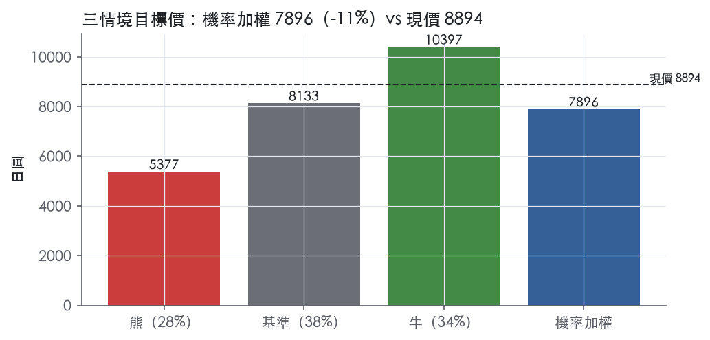
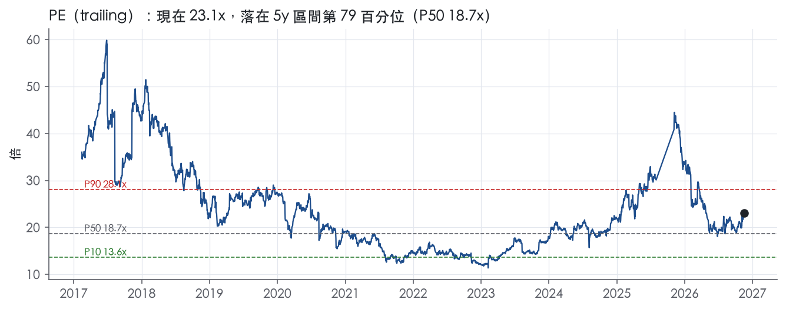
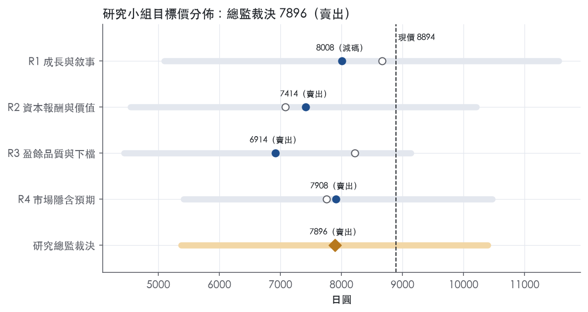
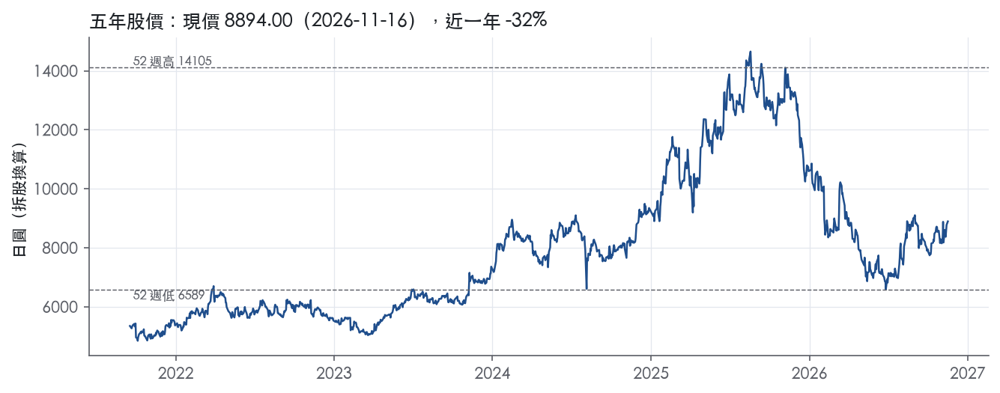

評等總表 › 未分類 › 7974.T
任天堂（7974.T）
週期次年盈餘回落、倍數偏高，偏空｜評等 賣出｜目標價 7896
評等歷史與財報快評
| 報告日 | 評等 | 目標價 | 當時股價 | 超額報酬 |
|---|---|---|---|---|
| 2026-11-16 | 賣出 | 7,896 | 8,894 | -16.2% |
| 評等 | 賣出（邊界，鄰近減碼） |
| 12 個月目標價 | 7896 日圓 |
| 現價 | 8894.00 日圓（2026-11-16） |
| 預期報酬 | 股價 -11.2%＋股息 2.8%＝總報酬 -8.4%；日股門檻 7.8%，超額 -16.2% |
| 估值方法 | P/E 18.0x，套在第 5–8 季的EPS（也就是一年後的未來四季） |
| 三情境 | 熊 5377／基準 8133／牛 10397 |
| 研究流程 | 四位研究員兩輪辯論＋研究總監裁決 |
| 資料來源 | EDINET、TDnet、J-Quants、Yahoo、FRED（全免費） |
目錄
第一章 結論摘要
週期次年盈餘回落、倍數偏高，偏空（研究總監裁決，四位研究員兩輪辯論後）
評等 賣出（邊界，鄰近減碼）｜12 個月目標價 7896 日圓（總監三情境機率加權 8131 與研究員中位數 7661 各半）｜現價 8894.00（2026-11-16）
預期報酬：股價 -11.2%＋股息 2.8%＝總報酬 -8.4%。日股門檻 7.8%，超額 -16.2%，離減碼的分界不到三個百分點，屬邊界評等（落在其他級距的機率約四成）。
估值方法：P/E 18.0x，套在第 5–8 季的EPS（也就是一年後的未來四季）。三情境：熊 5377（28%）／基準 8133（38%）／牛 10397（34%）。
評等說明：研究總監自己的機率加權目標價 8131 日圓對應「減碼」；與研究員第二輪中位數 7661 日圓各半後為 7896 日圓，落入「賣出」。兩者只差一級，請把這檔讀成「減碼～賣出」，正文裡總監的立場文字以「減碼」寫成。
什麼會讓研究總監改變看法：2027-02 Q3 短信營收高於 806.32B、存貨自 814.57B 明顯回落且上修全年計畫，轉中性；存貨 >700B 或 Q3 營益率低於 15%，轉更空並上調熊機率。
投資論點
- 一次性利得退場：近一年 EPS 385.27 含關稅退款與匯兌利益，公司計畫降到 268.90。
- 倍數偏高：現行 P/E 23.1x 在過去五年 79.0% 分位，我們只給 18x。
- 旺季上修是反方：2027 年 2 月短信若營收超過 806.32B 並上修計畫，我們轉中性。
關鍵數字
| 過去四季（實際，FY2027Q2） | 未來四季 | 第 5–8 季 | 第 9–12 季 | |
|---|---|---|---|---|
| 營收（B） | 2,179.5B | 2,092.3B | 2,155.1B | 2,176.7B |
| 營收成長 | 25.2% | -4.0% | 3.0% | 1.0% |
| 營業利益率 | 19.8% | 19.0% | 24.0% | 25.0% |
| EPS（日圓） | 385.27 | 371.88 | 451.82 | 471.76 |
| EPS 成長 | 21.5% | -3.5% | 21.5% | 4.4% |
| 每股股息（日圓） | — | 0.00 | 0.00 | 0.00 |
| P/E（現價） | 23.1x | 23.9x | 19.7x | 18.9x |
| 股息殖利率（現價） | 2.8% | — | — | — |
過去四季為申報數字；預測為研究總監的假設、程式計算。倍數與殖利率都用現價計算，用來看現價對應各期獲利的高低。
三情境
| 情境 | 機率（歷史） | 故事 | 未來四季營收成長 | 第 5–8 季營益率 | 倍數 | 目標價 | 股價漲跌 |
|---|---|---|---|---|---|---|---|
| 熊 | 28%（27%） | 風險表第 2 條新機新作節奏、第 3 條存貨 814.57B 旺季消化不良跌價與降價去化、第 1 條日圓升至 145；倍數回事後帶 P50 | -8.0% | 20.0% | 14.5x | 5377 | -39.5% |
| 基準 | 38%（37%） | Switch 2 第二年營收溫和年減，軟體與數位占比把 Q5–Q8 利益率推到 24%，倍數從 5 年帶 79 分位回到事後帶 P75 上方 | -4.0% | 24.0% | 18.0x | 8133 | -8.6% |
| 牛 | 34%（35%） | 2027-02 Q3 短信年末商戰硬體超賣並上修全年計畫，軟體占比提前擴張，日圓走本行下行路徑 160 | 2.0% | 25.0% | 21.0x | 10397 | 16.9% |
目標價由程式依研究總監的驅動與倍數計算；機率由研究總監給定。括號內是歷史頻率：把這檔股票過去十年 12 個月報酬的波動形狀，置中在基準情境，結果落在各情境附近的比例。

四位研究員用不同方法各自估值，回應研究總監的質疑後交出第二輪，最後由總監逐點裁決。各研究員的主張見第七章，裁決理由見第八章，完整論證見《研究底稿》。
| 立場（一輪→二輪） | 加權目標價（一輪→二輪） | 評等（一輪→二輪） | 第二輪倍數 | 熊～牛目標價 | |
|---|---|---|---|---|---|
| R1 成長與敘事 | 中性→看空 | 8667→8008 | 減碼→減碼 | 21.0x | 5097～11560 |
| R2 資本報酬與價值 | 看空→看空 | 7082→7414 | 賣出→賣出 | 16.0x | 4545～10209 |
| R3 盈餘品質與下檔 | 看空→看空 | 8219→6914 | 減碼→賣出 | 17.0x | 4441～9133 |
| R4 市場隱含預期 | 看空→看空 | 7752→7908 | 賣出→賣出 | 17.5x | 5416～10473 |
| 研究總監裁決 | 看空 | 7896 | 賣出 | 18.0x | 5377～10397 |
目標價由程式依各自的驅動與倍數計算；評等＝機率加權總報酬 − 日股門檻。
第二章 業務概況
公司做什麼、賣給誰
任天堂是一家以自有遊戲專用機軟硬體一體化模式為核心的娛樂內容公司，透過自行開發、自行製造、關係會社銷售的垂直整合體系，向全球家庭與玩家提供娛樂內容。公司主要產品為利用電腦技術的娛樂機器「遊戲專用機」，以及角色商品、紙牌等周邊商品。公司在「ホームエンターテインメント」領域從事娛樂產品的開發、製造及銷售，同時也展開運用IP的影像內容與行動應用程式事業。截至2026年3月31日，集團由任天堂本體、32家子公司及4家關聯公司構成。FY2026（2026年3月期）合併營收為2,313.05B日圓，LTM營收（至FY2027Q2）為2,179.53B日圓，是全球規模最大的遊戲硬體平台公司之一。
業務分部與產品
任天堂財報上是單一報告分部，沒有依產品或地區拆分的分部損益。公司表示，因產品銷售路線與銷售市場全部相同，主要子公司僅具銷售功能，因此經營資源配置與業績評估是以集團整體為單位，不按產品種類或地區區分。儘管沒有正式分部，公司在「製品及びサービスごとの情報」中揭露兩類收入：遊戲專用機（含硬體、軟體、周邊及數位業務）與IP關連收入等（影像、角色授權等）。FY2026遊戲專用機收入為2,239.54B日圓、IP關連收入等為73.51B日圓，合計2,313.05B日圓；對照FY2025的遊戲專用機1,083.53B日圓與IP關連81.39B日圓，遊戲專用機收入年增逾一倍，顯示Nintendo Switch 2 發售是FY2026成長的主要來源。產品線以「Nintendo Switch 2」與其前代「Nintendo Switch」雙平台並行。FY2026研究開發費為177.8B日圓，全年設備投資（主要為研發設備及自用軟體等無形資產）為49.29B日圓，資本支出規模相對於營收偏低，反映公司以「自行開發設計＋外部協力廠生產」維持輕資產結構的特性。
客戶、地區與通路
任天堂的終端客戶是全球家庭與玩家，銷售通路以各地關係會社的經銷體系為主，公司本身不直接面對零售端。有價證券報告書指出，合併損益表中沒有任何單一客戶占營收10%以上，顯示客戶集中度不高、通路分散於全球實體零售與數位商店。地區揭露上，公司採日本、美大陸、歐洲、其他四地分類，並於本期（FY2026）及前期（FY2025）均特別標示美國為美大陸中規模最大的單一市場。依最新決算短信，FY2027上半年（2026年4-9月）海外營收占比達78.9%，顯示任天堂絕大多數收入來自日本以外市場，日圓匯率波動對出口型營收具明顯影響。有形固定資產方面，FY2026日本境內為89.12B日圓、美國為28.14B日圓、其他地區為10.19B日圓，合計127.45B日圓，顯示製造與研發資源仍高度集中於日本本土。通路佈局上，集團在美國、加拿大、歐洲、澳洲、韓國、香港、台灣均設有專責銷售子公司，產品由任天堂本體開發製造後輸出給這些銷售子公司在當地市場銷售。
最近四季發生了什麼
最近四個季度的核心故事是Nintendo Switch 2 發售帶動的營收與獲利同步跳升，但季度間因新機發售時點與軟體上市節奏而波動劇烈。FY2026Q3（2025年10-12月，含年末旺季）營收806.32B日圓，年增86.3%，營益率19.2%，淨利159.93B日圓。FY2026Q4（2026年1-3月）營收回落至407.17B日圓，但仍年增95.1%，營益率14.7%，淨利65.19B日圓；當季為FY2026全年結算季，公司全年營收為2,313.05B日圓、全年營益率15.6%。FY2027Q1（2026年4-6月）營收517.81B日圓，年增轉負為-9.5%，營益率回升至27.5%，淨利147.42B日圓，單季獲利率明顯優於前幾季，顯示軟體銷售占比上升帶動毛利結構改善。FY2027Q2（2026年7-9月）營收448.23B日圓，年增-15.0%，營益率16.5%，淨利73.49B日圓；累計FY2027上半年營收966.04B日圓，其中海外營收占比78.9%。公司在決算短信中說明，硬體販售台數減少導致營收年減，但軟體銷售占比上升及第一季認列美國IEEPA關稅退款計入銷貨成本，使營業利益達216.5B日圓，年增49.1%；加計權益法投資利益60.82B日圓與利息收入26.73B日圓後，經常利益達300.68B日圓，上半年歸屬母公司淨利220.92B日圓。公司在決算短信中重申全年業績予想未變，維持2026年5月8日公布的數字：營收2,050.00B日圓、營業利益370.00B日圓、經常利益430.00B日圓、歸屬母公司淨利310.00B日圓、EPS 268.90日圓。
公司自己說的成長引擎與策略
公司將經營基本方針定義為「透過娛樂讓人們展露笑容」，在維持健全經營的同時追求新娛樂的創造。公司明確表示不設定特定財務目標作為經營指標，理由是娛樂商品的不確定因素多，需保留依事業環境變化靈活調整經營判斷的空間。公司的策略核心是讓顧客選擇任天堂作為「獨特且安心的娛樂」，做法是在硬體軟體一體型遊戲機之外，持續擴充影像內容、行動應用程式、實境娛樂設施與角色商品等「遊戲機事業框架外」的領域。公司指出所有事業活動基於兩項指導原則：「擴大任天堂IP粉絲群」與「建立與顧客的長期關係」，並透過Nintendo Account將這些關係延伸為跨世代的長期連結。對於主力新機，公司表示Nintendo Switch 2 於2025年6月發售後，將承接Nintendo Switch的普及基盤，優先投入魅力軟體的持續投放、強化因開發複雜化與長期化而需要的開發體制、人才培育及開發效率提升。決算短信進一步說明近期產品節奏：10月發售薩爾達傳說40周年紀念版主機、10-11月發售《Nintendo Switch Sports Resort》與《薩爾達傳說 時之笛》，並預告1月發售《Metroid Ravenna》等新作，持續投入新作以擴大Nintendo Switch 2 普及，同時延續Nintendo Switch既有陣容的銷售與營運。
整體看，任天堂現階段的成長引擎非常集中：Nintendo Switch 2 的硬體換機周期與伴隨而來的數位軟體銷售占比提升，是FY2026到FY2027營收與利潤同步跳升的唯一主要驅動力。公司刻意不設財務KPI、依賴IP生態與長期顧客關係而非短期數字管理，意味著投資人評價任天堂時必須更依賴新機/新作上市節奏做季度模型，而非線性外推營益率。目前股價對應trailing P/E 23.1x、EV/EBITDA 19.6x，位於五年區間的79%分位，顯示市場已為Switch 2 周期的高峰給出較高倍數，後續催化劑取決於能否延續軟體銷售動能與新作節奏兌現全年業績予想（營收2,050.00B日圓）。

第三章 經濟護城河
結論：窄，趨勢穩定
任天堂的護城河評為「窄」，趨勢「穩定」。自有 IP 加上帳號與相容性帶來的轉換成本，讓我們有把握未來 5 年 ROIC 高於資本成本。不給「寬」的原因是獲利高度依賴每一代主機是否成功，單一世代失敗就可能讓利潤率掉到十年低點，我們沒有把握 10 年以上都撐得住。
優勢來源
優勢來自無形資產、轉換成本與網路效應三類，其中無形資產最強。
- 無形資產（IP 與品牌）：
- 公司表示所有事業活動都依循「擴大任天堂 IP 粉絲」與「建立與顧客的長期關係」兩項指針。
- 公司也把 IP 延伸到影像內容、行動應用、實體設施與角色商品。
- FY2026「IP 関連収入等」為 73.51B 日圓，規模仍小，IP 變現的主要管道還是自家主機。
- 寶可夢的權益透過持分法關聯公司㈱ポケモン持有，議決權比例 32%。這讓集團握有全球授權價值最高的 IP 之一，又不必承擔全部營運成本。
- 轉換成本：
- Nintendo Switch 2 定位為前代後繼機，承接 Nintendo Switch 的普及基盤。
- 公司推出《薩爾達傳說 曠野之息》《王國之淚》《集合啦！動物森友會》等作品的 Switch 2 Edition，在舊作上追加新玩法。
- 公司表示要透過 Nintendo Account，把顧客關係發展成能直接提供娛樂、跨世代延續的連結。
- 已購軟體庫、帳號與 Nintendo Switch Online 經典遊戲服務綁在一起，玩家換機時留在任天堂平台的誘因明確。
- 網路效應：
- 公司持有萬代南夢宮、科樂美、史克威爾艾尼克斯、光榮特庫摩股份的理由，都寫明是對方「開發本公司平台用軟體」。
- 公司經營 Nintendo Developer Portal，支援包含個人在內的開發者。
- 裝機量、第三方軟體、用戶之間的雙邊效應存在，但平台吸引力主要來自第一方作品，所以網路效應只算次要來源。
材料中找不到成本優勢與效率規模的證據，這兩類不列。
數字上看得到嗎
ROIC 支持「長期高於資本成本」，但利潤率的波動不支持「寬」，數字與「寬」的主張有衝突。
支持的一面：
- ROIC 有資料的 9 年全部高於資本成本代理值 10.1%。
- ROIC 十年平均 27.6%，平均減資本成本 17.5%。
- 最低值 13.8% 出現在 FY2025 前代主機周期尾段，仍高於 10.1%。
資本成本代理值以美國 10 年債計算，日本 10 年公債為 2.841，以日圓計的實際門檻應更低，這項檢驗偏保守。
衝突的一面：
- ROIC 標準差 11.5%，營業利益率標準差 9.2%，營收成長標準差 46.4%，都不是寬護城河該有的穩定度。
- 營業利益率最低 6.0%，落在 FY2017，是前一代主機失利的年份；量化底稿沒有該年 ROIC。
- 毛利率在 38.2% 到 61.0% 之間擺盪，隨硬體與軟體的組合大幅變動。
我們把評級停在「窄」：IP 讓谷底年份仍有獲利，FY2017 淨利 102.57B 日圓就是例證；但數字顯示超額報酬的幅度完全取決於主機世代成敗。淨現金部位（淨負債 -1,422.08B 日圓）讓公司撐得過一次失敗的周期，這是存活緩衝，不是護城河本身。
什麼會侵蝕它
最大的侵蝕來源是下一代硬體失利，其次是娛樂選項分散與開發成本上升。
- 硬體集中：FY2026 遊戲專用機收入 2,239.54B 日圓，合計營收 2,313.05B 日圓，營收幾乎全部押在主機生態。
- 競爭與娛樂分散：公司自述市場環境因顧客娛樂需求多樣化、技術進步與競爭激化而變化劇烈。行動裝置與免費遊戲會分走玩家時間，削弱新一代主機的換機誘因。
- 開發成本：公司把因應開發複雜化、長期化的體制強化列為優先課題。大作開發周期拉長，會壓縮第一方軟體的推出密度，而第一方軟體正是轉換成本與網路效應的燃料。
趨勢判為穩定：Switch 2 已承接前代用戶基盤，目前沒有看到護城河變窄的證據，也沒有變寬的證據。
對估值的含意
目標倍數應相對同業溢價，理由是 ROIC 長期高出資本成本、IP 不可複製且資產負債表淨現金。溢價只該以 5 年為限，不應外推更長期間；倍數應錨定周期平均盈餘，而不是 Switch 2 高峰盈餘。現行 P/E 23.1x 位於 5 年區間 79.0% 分位，已高於 10 年中位數 21.0x，建議以 10 年中位數附近作為目標倍數上緣的參考。
量化底稿：報酬率與利潤率的水準與穩定度
| 指標 | 最新 | 十年平均 | 標準差 | 最低 | 最高 |
|---|---|---|---|---|---|
| ROIC | 18.2% | 27.6% | 11.5% | 13.8% | 48.5% |
| 毛利率 | 39.3% | 49.3% | 8.1% | 38.2% | 61.0% |
| 營業利益率 | 15.6% | 24.5% | 9.2% | 6.0% | 36.4% |
| FCF 利潤率 | 11.4% | 16.2% | 10.3% | -0.6% | 34.4% |
| ROE | 14.9% | 17.8% | 5.6% | 10.5% | 28.1% |
程式計算。資本成本代理值（10 年債＋5%）：10.1%；ROIC 平均減資本成本：17.5%；ROIC 有資料的 9 年中，高於資本成本 9 年。
第四章 財務體質與盈餘品質
結論：中品質，GAAP 淨利大幅優於現金流，但缺口主要來自應收款與存貨的季節性堆積而非虛增收入
任天堂 LTM 現金轉換三項指標全部亮紅燈（營業現金流／淨利 0.25x、自由現金流／淨利 0.19x、應計比率 8.6%），單看燈號像是盈餘品質出問題。但對照有價證券報告書與決算短信，應收帳款、存貨因 Switch 2 鋪貨與年底商戰在途而膨脹，是實體零售業常見的時點性落差，不是收入認列造假。十年平均現金轉換仍有 0.78x／0.73x，顯示長期而言現金與淨利是同步的，只是 LTM 這一年因為硬體新機上市被壓到低點。因此評級落在「中」：有紅旗但可用具體業務事件解釋，不到「低品質」的程度。
現金有沒有跟上盈餘
沒有，但原因找得到。FY2026（2026 年 3 月期）淨利 424.06B，營業現金流 289.79B，自由現金流 262.62B（年度表），現金轉換已低於淨利。FY2025（前一年）更極端，淨利 278.81B 但自由現金流是負的 -6.94B（年度表），當年是 Switch 2 上市前的庫存與零組件備貨年。有報 MD&A 明確點出：FY2026 總資產增加的主因是「現金及び預金や受取手形及び売掛金などが増加した」，營業現金流 2,897 億円的增加（換算 289.7B）相對稅前淨利 5,681 億円（換算 568.1B）明顯偏低，報告書給的理由是「法人税等の支払いや持分法による投資損益の計上、売上債権の増加などの減少要因」。半年報再度確認同一模式：FY2027H1（2026 年 4–9 月）中間純利益 220,917 百萬円（換算 220.92B），但半期報告書未附現金流量表，無法直接核對本期 CFO，只能從 BS 看到棚卸資産從 539,804 百萬円增至 814,570 百萬円（換算 539.80B→814.57B）、支払手形及買掛金從 236,082 百萬円增至 370,654 百萬円（換算 236.08B→370.65B），庫存與應付帳款同步上升，符合新機鋪貨週期、不是單純應收端堆積。結論：現金沒跟上盈餘，但缺口集中在存貨與應收的時點差，應隨硬體銷售進入穩態後收斂。
公司調整了什麼（GAAP 與非 GAAP 的差距）
任天堂的決算短信沒有編製非 GAAP 調整後盈餘，日本準則下公司只揭露「經常利益」作為含營業外收支的本業利益，不是美式 adjusted EPS。FY2027H1 營業利益 216,500 百萬円（換算 216.5B）之外，另加計持分法投資利益 60,822 百萬円（換算 60.82B）、受取利息 26,731 百萬円（換算 26.73B）、為替差損 7,258 百萬円（換算 7.26B），得出經常利益 300,676 百萬円（換算 300.68B）。這些營業外項目裡，與 Pokémon 公司等關聯企業的持分法投資利益是常態性收益，可視為真實經營成果的一部分；但受取利息與為替差損／益波動較大，FY2027H1 無為替差益而上年同期有 18,495 百萬円（換算 18.50B）的為替差益，顯示經常利益對匯率高度敏感，不宜當作穩定的核心盈餘基礎。有報 MD&A 也指出 FY2026 全年經常利益大增主因「持分法による投資利益が増加した」，同樣是把營業外收益放大的因素。整體上，GAAP 營業利益才是最乾淨的本業盈餘指標，持分法損益與匯兌損益應個別拆開看，不建議直接全額加總視為核心盈餘。
資產負債表與資本配置
資產負債表極端乾淨，淨負債為負 -1,422.08B，等於是淨現金公司。半年報 BS 顯示現金及び預金從期初 1,791,802 百萬円降至 1,553,865 百萬円（換算 1,791.80B→1,553.87B），同時有価証券與投資有価証券合計上升，屬現金在不同短期投資工具間的配置轉換，不是現金流失。有報揭露 FY2026 全年財務活動現金流為負 249.7B（原文 2,497 億円の減少），主因是「配当金の支払いや自己株式の取得による支出」，對應到計分表（股利＋回購）／淨利 LTM 79.1%、近三年平均 58.6%，股東回饋力度持續在五成以上，屬綠燈。利息保障倍數 LTM 2054.5x反映公司幾乎零有息負債（各季總債務 0.00B），槓桿完全不是限制因子。流動比率短信未重複揭露但有報已給出 396% 的描述性數字（原文直接為比率非金額，不需單位換算），流動性無虞。
紅旗逐條說明
營業現金流／淨利 LTM 0.25x（紅燈）：真實但可解釋。有報將 FY2026 CFO 偏低歸因於「法人税等の支払いや…売上債権の増加」，半年報 BS 進一步顯示棚卸資産與支払手形同步上升（換算 539.80B→814.57B、236.08B→370.65B），屬 Switch 2 鋪貨周期的營運資本占用，非收入虛增。
自由現金流／淨利 LTM 0.19x（紅燈）：同樣源於上述營運資本占用，加上年度表顯示資本支出／營收比率 FY2026 為 1.2%（年度表），絕對金額不大，FCF 偏低主因仍是 CFO 偏低而非資本支出暴增。
應計比率 LTM 8.6%（紅燈）：與前兩項紅燈同源，反映（淨利－CFO）占總資產比重擴大，對應半年報應收帳款從 147,485 百萬円增至 177,137 百萬円（換算 147.49B→177.14B），屬硬體銷售在途的時點性應計，十年平均僅 1.5%顯示非結構性問題。
三項紅旗全部指向同一個根因——新主機上市周期中的存貨與應收堆積，屬一次性／周期性而非盈餘操縱，但估值研究員仍須留意若下一季未見逆轉，紅旗性質會從「周期性」轉為「結構性」。
對估值的含意
估值應以 GAAP 營業利益為核心基礎，持分法投資利益與匯兌損益需拆開單獨評估其永續性，不建議把經常利益或淨利直接當作穩定盈餘倍數的分母。鑑於三項現金流紅旗均可歸因於 Switch 2 鋪貨的營運資本周期，且淨負債為負、利息保障倍數極高，不需要像槓桿driven的盈餘品質問題那樣大幅打折，但基於 LTM 現金轉換明顯低於十年平均，建議對 LTM 盈餘打一個溫和折扣（例如改用近三年平均現金流權重）而非全額採信 GAAP EPS 385.27。槓桿端完全不是限制倍數的因子，淨現金部位反而支撐目前 P/E 23.1x 處於五年 79% 分位的評價。
量化底稿：盈餘品質計分表
| 項目 | LTM | 近三年 | 十年 | 燈號 | 規則 |
|---|---|---|---|---|---|
| 營業現金流／淨利 | 0.25x | 0.56x | 0.78x | 紅 | ≥1.00x 綠、<0.80x 紅 |
| 自由現金流／淨利 | 0.19x | 0.50x | 0.73x | 紅 | ≥0.90x 綠、<0.60x 紅 |
| 應計比率（(淨利−CFO)／平均總資產） | 8.6% | 4.3% | 1.5% | 紅 | ≤0.0% 綠、>5.0% 紅 |
| SBC／營收 | — | — | — | — | ≤3.0% 綠、>8.0% 紅 |
| 淨負債／EBITDA | -3.15x | -3.27x | -3.06x | 綠 | ≤1.50x 綠、>3.00x 紅 |
| 利息保障倍數（營業利益／利息） | 2054.5x | 2114.3x | 2731.2x | 綠 | ≥8.00x 綠、<3.00x 紅 |
| 稀釋股數年變動 | 0.0% | -0.1% | -0.4% | 黃 | ≤0.0% 綠、>3.0% 紅 |
| （股利＋回購）／淨利 | 79.1% | 58.6% | 51.2% | 綠 | ≥50.0% 綠、<0.0% 紅 |
程式計算；燈號以 LTM（無則近三年平均）判定。
- 程式紅旗：營業現金流／淨利 紅燈（LTM 0.25x，近三年平均 0.56x）
- 程式紅旗：自由現金流／淨利 紅燈（LTM 0.19x，近三年平均 0.50x）
- 程式紅旗：應計比率（(淨利−CFO)／平均總資產） 紅燈（LTM 8.6%，近三年平均 4.3%）
第五章 主要風險
結論：任天堂最大的風險是日圓匯率波動疊加Nintendo Switch 2單一平台週期的需求不確定性，兩者加總足以讓目前23.1倍trailing P/E的樂觀假設被打折。
五大風險表
| 風險 | 觸發指標（看什麼數字、在哪裡看） | 對EPS的影響方向與粗略幅度 | 未來12個月發生機率（高／中／低） | 出處 |
|---|---|---|---|---|
| 日圓匯率大幅波動 | USD/JPY即期與決算短信揭露的海外營收比率（FY2027上半年78.9%） | 方向：日圓升值侵蝕EPS；幅度大，因海外營收占比近八成且公司持有大額外幣資產 | 高 | |
| Nintendo Switch 2新機/新作上市節奏不如預期 | 每月/每季硬體販售台數、軟體銷售本數（決算短信逐月揭露） | 方向：硬體台數或新作銷量不及預期，直接壓低營收與營益率；幅度大，因FY2026硬體收入2,239.54B日圓占總營收近97% | 中 | |
| 業績季節性與存貨管理失準 | 中間連結貸借對照表棚卸資產（FY2026末539.80B日圓→FY2027中814.57B日圓） | 方向：存貨急增若對應年末旺季需求不如預期，會產生減損壓低毛利；幅度中 | 中 | |
| 外部製造依存與供應鏈中斷 | 主要委外生產地（亞洲為主）治安、自然災害、傳染病等公告事件 | 方向：零部件短缺導致供給不足或成本上升，壓低毛利率；幅度中，公司已採多家供應商分散風險 | 低 | |
| 系統遭網路攻擊或資料外洩 | 公司重大事故公告、Nintendo Account服務中斷通知 | 方向：若發生大規模停機或資料外洩，將損及品牌評價與線上數位銷售（FY2027上半年數位銷售249.6B日圓，年增60.5%）；幅度中偏小 | 低 |
逐條說明
匯率波動是任天堂最直接且最大的EPS驅動變數。公司海外銷售占比超過七成，且絕大部分以現地貨幣交易，同時持有大額外幣資產，匯率換算與交易層面都會受影響。最新一期決算短信顯示FY2027上半年海外營收784.1B日圓（966.04B總營收中），海外占比78.9%，而當期已認列為替差損7.73億（原文為為替差損7,258百萬円＝7.26M... 應以百萬円計，即7.26M？核對：7,258百萬円=7.26B日圓），顯示日圓走勢直接反映在非營業損益。現行USD/JPY為158.23，若日圓大幅升值，將壓縮出口端毛利並在換算時侵蝕合併營收與EPS。這條風險可監測性最高：每日看USD/JPY即期匯率，每季看決算短信的為替差益/差損與海外營收比率即可追蹤。
Switch 2新機週期是公司目前唯一主要成長引擎，一旦節奏放緩，衝擊是結構性的。有價證券報告書列出「新製品等の開發」與「市場環境の変化や他社との競争」風險，指出遊戲專用機軟硬體的企劃開發需要大量時間與費用，且客戶偏好無法保證接受新產品。業務概況已指出FY2026遊戲專用機收入2,239.54B日圓，較FY2025的1,083.53B日圓成長逾一倍，是FY2026到FY2027營收與獲利同步跳升的唯一主要驅動力。但FY2027Q1、Q2營收年增已轉負（-9.5%、-15.0%），顯示硬體販售台數下滑已開始反映在財報上。公司全年業績予想維持2026年5月8日的數字（營收2,050.00B日圓、EPS 268.90日圓）不變，但這代表硬體換機周期的高峰期已過，後續軟體銷售與新作節奏（10月薰衣草版主機、11月薩爾達時之笛、1月Metroid新作）能否延續動能，是決定能否達標的關鍵觀測點。
存貨大幅堆高是旺季前的正常布局，但也放大了季節性誤判的下行風險。中間連結貸借對照表顯示棚卸資産從FY2026末的539.80B日圓增至FY2027中間期（2026年9月底）的814.57B日圓，增幅明顯。有價證券報告書的「業績の季節的變動」與「製品の評価、適正在庫の確保」兩條風險指出，公司產品需求高度集中於年末商戰期，若旺季新品未能吸引顧客或供給跟不上，存貨將面臨陳腐化減損的風險。這條可用每季財報的棚卸資産變動與存貨周轉天數追蹤。
供應鏈依賴外部製造，是機率較低但一旦發生衝擊較大的尾部風險。有價證券報告書明確寫出公司將主要零件製造與組裝委外，若委外廠商倒閉或供應地發生治安惡化、自然災害、傳染病擴大，將妨礙生產並衝擊業績。公司已採多家供應商分散風險、並對重要零件建立全流程管理體制作為緩解措施，故判定機率為低。
網路安全與資料外洩風險隨數位業務占比上升而重要性提高。公司在「系統のトラブル」與「システムへの不正アクセス・機密情報の流出」兩條風險中指出，若線上服務遭受網路攻擊、系統停止或資料外洩，將影響事業活動、品牌評價及財務狀況。隨著數位銷售占比持續擴大（FY2027上半年數位銷售249.6B日圓，年增60.5%），此風險的財務敏感度正在上升，但截至目前未見重大事故公告，機率判定為低。
公司沒寫、但我們認為該注意的
美國IEEPA關稅退款是一次性利益，不應視為常態化毛利改善。FY2027上半年營業利益大增49.1%至216.5B日圓的主因之一，是「作為売上原価計上的美國IEEPA關稅退款於第1四半期認列」。這是一次性會計事件，若美國貿易政策方向逆轉（加徵新關稅而非退款），FY2027下半年及FY2028的毛利率可能無法延續上半年的改善幅度。
目前估值已反映Switch 2週期高峰，業績予想不達標的股價重估風險被低估。公司全年業績予想（營收2,050.00B日圓、EPS 268.90日圓）自2026年5月公布後未曾上修，但trailing P/E已達23.1x，位於五年區間79%分位，顯示市場定價已偏向樂觀情境。若FY2027下半年硬體銷售持續年減、未能靠軟體銷售占比提升抵銷，公司即使維持原業績予想，股價倍數仍可能因缺乏上修催化劑而面臨壓縮。
第六章 市場在定價什麼
現價 8894.00 對應 trailing（過去四季）P/E 23.1x、EV/EBITDA 19.6x、EV/EBITA 20.5x、EV/Sales 4.1x、FCF 殖利率 0.8%。主要估值倍數 P/E 現在 23.1x，落在5 年區間第 79 百分位（P10／P50／P90 = 13.6x／18.7x／28.1x）。

把程式的機械基準預測放到現價下，市場付的前瞻倍數是：P/E（未來四季） 19.9x、P/E（第 5–8 季） 18.0x。反推 DCF 顯示市價隱含未來五年營收年成長 11.7%（WACC 9.0%、終值成長 3.0%、FCF 利潤率 14.5%，SBC 不加回）。
| 倍數 | 現在 | 5 年 P10 | 5 年 P50 | 5 年 P90 | 現在分位 | 全期 P50 |
|---|---|---|---|---|---|---|
| P/E | 23.1x | 13.6x | 18.7x | 28.1x | 79.0% | 21.0x |
| EV/EBITDA | 19.6x | — | — | — | — | 16.2x |
| EV/EBITA | 20.5x | — | — | — | — | 16.8x |
| EV/EBIT | 20.5x | — | — | — | — | 16.8x |
| EV/Sales | 4.1x | — | — | — | — | 4.0x |
| P/S | 4.7x | 3.8x | 4.6x | 8.4x | 54.1% | 4.5x |
| P/FCF | 119.7x | — | — | — | — | 24.6x |
trailing 倍數（股價 ÷ 過去四季）；分位以每個交易日計算。
（日股同業籃尚未建置：評等門檻用日股絕對門檻＝日本 10 年公債＋股權風險溢酬 5%，見首頁。）
事後實現前瞻倍數帶（P/E，2018-11-21..2025-11-19）：P10／P50／P90 = 11.6x／14.5x／30.3x。它是每個交易日的股價除以之後四季實際實現的指標；一年後，今天的第 5–8 季正是那時的未來四季，所以這條帶是 12 個月目標價的同口徑倍數。因為用的是事後實際而非當時預期，過去成長超乎預期的公司這條帶會偏低。
程式的機械基準（成長率從過去四季年增率三年收斂到 6%、利潤率持平）用 事後實現前瞻 P/E P50 估值得到 7176（-19.3%），市場現行前瞻倍數（現價 ÷ 基準 未來四季指標）一年後持平，套在基準 第 5–8 季指標得到 9811。這兩個數字只是參考點，不是本報告的目標價；研究員對這個定價的回應在第七章。
第七章 四位研究員的看法
下表是每位研究員第一輪（各自獨立）與第二輪（回應研究總監的質疑後）的結果。目標價全由程式依各自的假設計算。
| 立場（一輪→二輪） | 加權目標價（一輪→二輪） | 評等（一輪→二輪） | 第二輪倍數 | 熊～牛目標價 | |
|---|---|---|---|---|---|
| R1 成長與敘事 | 中性→看空 | 8667→8008 | 減碼→減碼 | 21.0x | 5097～11560 |
| R2 資本報酬與價值 | 看空→看空 | 7082→7414 | 賣出→賣出 | 16.0x | 4545～10209 |
| R3 盈餘品質與下檔 | 看空→看空 | 8219→6914 | 減碼→賣出 | 17.0x | 4441～9133 |
| R4 市場隱含預期 | 看空→看空 | 7752→7908 | 賣出→賣出 | 17.5x | 5416～10473 |
| 研究總監裁決 | 看空 | 7896 | 賣出 | 18.0x | 5377～10397 |
目標價由程式依各自的驅動與倍數計算；評等＝機率加權總報酬 − 日股門檻。
分歧度：第一輪 加權目標價 7082～8667（區間＝現價的 18%）· 倍數 16～22x · 立場 中性×1、看空×3；第二輪 加權目標價 6914～8008（區間＝現價的 12%）· 倍數 16～21x · 立場 看空×4（方向一致）。

| 研究員 | 第二輪主張 | 堅持的理由 |
|---|---|---|
| R1 成長與敘事 | 偏空，21x P/E 套未來一年 EPS，錨在十年中位數。 | 未來一年是營益率谷段，不退到五年中位數 18.7x。 |
| R2 資本報酬與價值 | 偏空，16x P/E 套第二年 EPS，四人中最低。 | 組合效益只提高盈餘，再提高倍數就是重複計價。 |
| R3 盈餘品質與下檔 | 偏空，17x P/E：校正後 18x 再扣 1x。 | 營業外收益高於常態，倍數要扣 1x 折價。 |
| R4 市場隱含預期 | 偏空，17.5x P/E，略高於歷史上四分位 17.2x。 | 現價隱含營收持平到小增，但未來一年營收仍年減。 |
每位研究員的逐條回應與完整論證見《研究底稿》（7974.T_研究底稿_2026-11-16.docx）。
第八章 研究總監裁決
分歧登記
| 分歧點 | R1 | R2 | R3 | R4 | 什麼資料會分出勝負 |
|---|---|---|---|---|---|
| Q5–Q8 營益率（op_margin_y2） | 24%，低於 Switch 1 第三年 | 25%，毛利逆勢升 | 22%，硬體成本重 | 23% | 2027-11 FY2028 上半年營益率（無退款） |
| 目標倍數與口徑 | 21x eps@ntm，trailing 10 年 P50 | 16x q5_q8，事後帶 P50–P75 | 17x q5_q8，18x 錨減 1x | 17.5x q5_q8，P75 上方 | 2027-02 Q3 短信是否上修全年計畫 |
| NTM 營益率（op_margin_y1） | 18%（逐季 19／15／20／17） | 18%，等於計畫隱含 | 18.5%，剔除退款 | 19% | 2027-02 Q3 營益率對去年同季 19.2% |
| NTM 營收成長（rev_growth_y1） | −5% | −5% | −7%，不假設超標 | −4%，小幅超標 | 2027-02 Q3 營收對 806.32B |
| 熊情境路徑與深度 | 17x@ntm、日圓 145 | 13x、日圓 145 | 13x、日圓 160、風險表 2、3 | 14.5x、日圓 145、風險表 2、3 | 2027-02 Q3 棚卸資産 ≤650B 或 >700B；日圓兌日圓對 153 |
逐點裁決
1. Q5–Q8 營益率：選 R1，24%。 組合效益是真的：上半年營收由 1,099.57B 降到 966.04B，毛利卻由 398.47B 升到 486.46B，數位銷售 249.6B 年增 60.5%，足以否定 R3 的 22%；R3 說 Switch 2 硬體成本較重，但發售年毛利率 39.3%與 Switch 1 發售年 38.2%幾乎相同，這條理由不成立。R2 的 25% 需要販管費相對營收下降，而上半年販管費從 253.28B 升到 269.96B、研發費 177.8B 仍在為開發長期化擴編，缺證據。R1 把 24% 放在 Switch 1 第三年 26.9%之下，上限有依據。另外，本部所有來源的營業利益預測誤差中位數都是負的（−1.3% 到 −5.1%，程式記分），系統性偏低，這是我不往 22–23% 靠的第二個理由。
2. 目標倍數：own，18x eps@q5_q8。 四人換成同口徑後很接近，分歧在錨的校正量。事後實現帶在 2018–2021 段是「股價除以事後超預期的 EPS」，系統性低於當時真正的前瞻倍數（基準模型註記）；R2 只在帶內取 16x，等於把 Switch 1 的意外當常態，且他稱 Q5–Q8「接近本週期利益率高點」，與自己 25% 低於 Switch 1 第三、四年（26.9%、36.4%）的驅動矛盾。R3 先校正到 18x 再扣 1x 營業外折價，我接受錨、不接受全額折價：上半年持分法利益 60.82B、受取利息 26.73B是經常性的（寶可夢 32% 持分、淨現金 1,422.08B），匯兌部分（差損 7.26B 對上年差益 18.50B）已由本行日圓 153 路徑吃進營收與利潤率，再扣倍數是重算。R4 的 17.5x 對 P75 17.2x 只校正 0.3x，不足。R1 的 21x@ntm 錨在 trailing 10 年 P50，他指出 5 年帶被高峰年壓低也成立，口徑不同但方向與我相同；問題是護城河章把 10 年中位數定為上緣，營收年減的基準不該站上緣。18x 低於市場持平 19.9x 的理由全是個股：LTM EPS 385.27含 IEEPA 退款與匯兌利益、NTM EPS 轉為年減（公司計畫 268.90）、trailing 23.1x 在 5 年帶 79.0% 分位、計畫在上半年未上修。利率不是理由。
3. NTM 營益率：選 R4，19%。 R2 拆開計畫：全年 370.00B 對 2,050.00B 隱含 18%，上半年已實現 216.5B，下半年隱含利益率明顯低於 18%；日本公司期初計畫偏保守，這是地板不是中位。R1 的 FY2028Q1 20% 把去年 27.5%的落差全算成退款，但退款金額未揭露，去年同季還有《トモダチコレクション》881 萬本的高毛利軟體，他自己承認。R4 的 OP 預測誤差中位數 −1.3%、勝過基準 72%，是四人中最不偏低的；R1、R2 的 −2.9%、−5.1% 要反向修。
4. NTM 營收成長：選 R4，−4%。 基準 18.8% 是發售年 LTM 年增率的機械外推，計畫 2,050.00B 低於 FY2026 的 2,313.05B，Q1、Q2 年減 −9.5%、−15.0%，四人否定基準都對。R3 的 −7% 等於假設下半年只做到計畫，與他「計畫保守、實績超標」的主張矛盾。上半年 Nintendo Switch 軟體仍賣出 6,573 萬本、Switch 2 軟體 2,449 萬本，向下相容給 FY2028 上半年軟體基盤；本行日圓 158 到 153 約 3% 的換算逆風已在 −4% 內。
5. 熊情境：選 R4。 路徑：本行日本前提對出口商的指引是牛配弱日圓 160、熊配 145；風險章把匯率列第一條、機率高，需求列第二條、機率中。R3 以需求為先把熊配到 160，內部一致，但與指引和公司自己的風險排序相反。深度：R3、R2 的 13x 熊相對自己點估 −36%、−39%（程式檢查表），已在置中分布 P10 −35% 之外，而點估本身已低於現價 22%、17%；≤−40% 的歷史比例只有 8%，那是尾部，不是「結果較接近」的熊。R4 的 14.5x（事後帶 P50）相對點估 −30%，在 P10 與 P25 之間，和二成多的機率桶相稱。R1 的熊給 17x@ntm，旺季失速時市場不會維持 10 年中位數的 trailing 倍數。
漂移與總經偏離。 無退回。R1 加權降 7.6%、靠攏比例 72%，但三處修正各有證據（乾淨 Q2 營益率 16.5% 對 16.7%、護城河章的上緣定義、有報季節性條目）；R3 反向移動 −79%，是回應我 Q1 的一致性要求；R4 只把機率向歷史靠；R2 的上修有轉發短信的新證據。四人 macro_deviations 皆空，接受；R3 的牛熊匯率配置屬情境選擇，已在第 5 點裁決。
最終假設與目標倍數
| 驅動 | 基準 | 裁定 | 來源與理由 |
|---|---|---|---|
| rev_growth_y1 | 18.8% | −4% | R4，裁決 4 |
| rev_growth_y2 | 12.4% | +3% | R2／R4：機種第三年軟體擴量，前置換機壓住硬體 |
| rev_growth_y3 | 6.0% | +1% | R4：平台期 |
| op_margin_y1 | 19.8% | 19% | R4，裁決 3 |
| op_margin_y2 | 19.8% | 24% | R1，裁決 1 |
| op_margin_y3 | 19.8% | 25% | R1／R2／R4 一致 |
| share_change_pct | −1.0% | −0.5% | R2：自己株式 341.85B→341.63B，上半年沒有買回，LTM 推得的 −1.0% 偏高 |
其餘沿用基準模型。目標倍數 18x 套 eps@q5_q8，與事後實現前瞻帶同口徑；錨為 P75 17.2x 加成長期低估校正（R3 的 18x），不扣營業外折價。日股同業籃尚未建置（程式註記），只能用自家帶，不給同業溢折價。程式按 LTM 持平的股利（股息率 2.8%）可能偏高，因計畫 EPS 268.90 低於 LTM，這只會讓總報酬更低，不改方向。
三情境與機率
- 基準 38%：上列驅動、18x。第二年營收溫和年減，軟體與數位占比把 Q5–Q8 利益率推到 24%，倍數從 5 年帶 79 分位回到事後帶 P75 上方。
- 牛 34%（取 R4，未調）：rev_growth_y1 +2%、y2 +5%、op_margin_y2 25%，21x。觸發：2027-02 Q3 短信年末商戰硬體超賣並上修全年計畫，軟體占比提前擴張，日圓走本行下行路徑 160。
- 熊 28%（取 R4，微調 y3）：rev_growth_y1 −8%、y2 −2%、y3 −2%，op_margin_y1 17%、y2 20%、y3 22%，14.5x。對應風險表第 2 條（新機／新作節奏）、第 3 條（棚卸資産 539.80B→814.57B 旺季消化不良，跌價與降價去化）、第 1 條（日圓升至 145）。y3 微調只為固定成本去槓桿的機制一致（假設），不影響 Q5–Q8 目標價。
機率從歷史基準率出發。我的牛熊相對基準的距離與 R4 接近，程式對 R4 的對照是 32／38／30，我給 34／38／28，偏離在 2 個百分點內。牛略高於熊的公司特有理由：上半年淨利 220.92B 對全年計畫 310.00B，Q3 上修是有日期的催化劑；壓住牛的是硬體 649 萬台與存貨。本部 22 份報告全部熊高於牛，本份不延續。
我們與市場的差距在哪
差距先在盈餘的高基期：市場的 23.1x trailing 套在含退款與匯兌利益的 LTM EPS 385.27 上；R4 的反推顯示現價落在他的基準與牛之間，隱含營收持平到小增、或倍數不動，而我們的基準是 NTM 營收 −4%、EPS 年減，利潤率方向與市場同向。其次在倍數：市場持平 19.9x 對我的 18x，是從 79 分位回到歷史常態，不是壓到常態之下。立場看空，與程式評等（減碼或賣出）一致；若只到減碼，是因為牛情境有明確日期與觸發，不是下檔小。
可證偽主張
- 2027-02-10 前，FY2027Q3 營收低於 806.32B且棚卸資産（2026-12-31）≤650B；若營收高於 806.32B 且存貨回落，轉中性。
- 2027-05-15 前，FY2027 實績營業利益 ≥390B（高於計畫 370.00B）；若 <370B，裁決 3 錯。
- 2027-05-15 前，FY2028 期初業績予想營收 ≤2,200B；若 >2,300B，裁決 4 錯。
- 2027-11-15 前，FY2028 上半年營業利益率 ≥20%（無退款）；若 <18%，24% 失去路徑。
目標價拆解（程式計算）
現價 8894.00 → 點估目標價 8133 → 機率加權目標價 8131 → 目標價 7896，差距拆成五段：成長順延 +917 日圓（市場現行倍數 19.9x 一年後持平、獲利照機械基準）；倍數差 -926 日圓（總監倍數 18.0x vs 市場持平倍數 19.9x，同一機械基準預測）；盈餘差 -752 日圓（總監預測的第 5–8 季EPS 0.0B vs 機械基準 0.0B，同一倍數）；情境不對稱 -2 日圓（機率加權減點估）；研究小組平均 -235 日圓（總監機率加權 8131 與研究員第二輪中位數 7661 各半）。各段相加等於目標價減現價。本階段未接賣方共識，差距以市場隱含預期為對照。
第九章 估值與目標價
驅動假設：機械基準 vs 研究總監
| 驅動 | 機械基準 | 研究總監 | 差異 |
|---|---|---|---|
| 未來四季營收成長 | 18.8% | -4.0% | -22.8 pp |
| 第 5–8 季營收成長 | 12.4% | 3.0% | -9.4 pp |
| 第 9–12 季營收成長 | 6.0% | 1.0% | -5.0 pp |
| 未來四季營益率 | 19.8% | 19.0% | -0.8 pp |
| 第 5–8 季營益率 | 19.8% | 24.0% | +4.2 pp |
| 第 9–12 季營益率 | 19.8% | 25.0% | +5.2 pp |
| D&A／營收 | 0.9% | 0.9% | ＝ |
| 資本支出／營收 | 1.2% | 1.2% | ＝ |
| SBC／營收 | 0.0% | 0.0% | ＝ |
| 稅率 | 25.4% | 25.4% | ＝ |
| 股數年變動 | -1.0% | -0.5% | +0.5 pp |
研究總監只寫偏移，未寫的沿用基準。
研究總監假設下的三年預測
| 期 | 營收 | 成長 | 營益率 | 營業利益 | EBITDA | EBITA | 淨利 | EPS | FCF | 期末淨負債 |
|---|---|---|---|---|---|---|---|---|---|---|
| 未來四季 | 2,092.3B | -4.0% | 19.0% | 397.5B | 417.0B | 397.5B | 427.6B | 371.88 | 420.9B | -1,490.3B |
| 第 5–8 季 | 2,155.1B | 3.0% | 24.0% | 517.2B | 537.3B | 517.2B | 517.0B | 451.82 | 510.1B | -1,647.6B |
| 第 9–12 季 | 2,176.7B | 1.0% | 25.0% | 544.2B | 564.4B | 544.2B | 537.1B | 471.76 | 530.1B | -1,825.0B |
程式依上表的驅動計算；季度用最近四季季節性分攤；不含營運資金變動。
目標價
估值方法：P/E 18.0x，套在第 5–8 季的EPS（也就是一年後的未來四季）。研究總監目標倍數的錨：事後實現前瞻 P/E 帶 P75 17.2x 加成長期低估校正（R3 的 18x 校正錨），不扣營業外折價；低於市場持平 19.9x 的理由為 LTM 含一次性收益、NTM EPS 年減、trailing 在 5 年帶 79 分位。
計算：EPS（第 5–8 季） 451.82 × 18.0x → 點估目標價 8133（-8.6%）；隱含 P/E（未來四季）21.9x、P/E（第 5–8 季）18.0x、EV/EBITDA（第 5–8 季）14.5x、FCF 殖利率（第 5–8 季）5.5%。
總監三情境機率加權目標價 8131，研究員第二輪中位數 7661，兩者各半＝目標價 7896；預期報酬 股價 -11.2%＋股息 2.8%＝總報酬 -8.4%；減評等門檻 7.8%（日股絕對門檻 7.8%（日本 10 年公債 2.84%（2026-11-12）＋股權風險溢酬 5%；日股同業籃尚未建置））＝超額報酬 -16.2% → 評等 賣出（超額 >+15% 買進、+5～+15% 加碼、±5% 中立、−5～−15% 減碼、<−15% 賣出）。同一份資料重開研究小組，超額約有正負四個百分點的雜訊（一個標準差，二十檔實測）；以此估計，評等落在其他級距的機率約四成。超額離減碼的分界不到三個百分點，應視為邊界評等。
| 情境 | 機率 | 未來四季成長 | 第 5–8 季成長 | 第 5–8 季營益率 | EPS（第 5–8 季） | 倍數 | 目標價 |
|---|---|---|---|---|---|---|---|
| 熊 | 28% | -8.0% | -2.0% | 20.0% | 370.79 | 14.5x | 5377 |
| 基準 | 38% | -4.0% | 3.0% | 24.0% | 451.82 | 18.0x | 8133 |
| 牛 | 34% | 2.0% | 5.0% | 25.0% | 495.10 | 21.0x | 10397 |
第十章 可證偽主張與追蹤點
| 主張 | 驗證日 | 看哪個數字 | 門檻 |
|---|---|---|---|
| FY2027Q3 營收年減且年底存貨消化 | 2027-02-10 | FY2027Q3 決算短信 營收與棚卸資産（2026-12-31） | 營收 < 806.32B 且棚卸資産 ≤ 650B |
| FY2027 實績營業利益超過保守計畫 | 2027-05-15 | FY2027 營業利益（決算短信） | ≥ 390B |
| FY2028 期初業績予想營收不高於平台期水準 | 2027-05-15 | FY2028 業績予想 營收 | ≤ 2,200B |
| 無關稅退款下軟體組合撐住利潤率 | 2027-11-15 | FY2028 上半年 營業利益率（決算短信） | ≥ 20% |
到期由程式結算（第 5 階段帳本）。
附錄 A 年度財務摘要
| 期 | 營收 | 成長 | 毛利率 | 營益率 | EBITDA | 淨利 | EPS | CFO | FCF | ROIC | 淨負債 | 稀釋股數 |
|---|---|---|---|---|---|---|---|---|---|---|---|---|
| FY2017 | 489.1B | — | 40.7% | 6.0% | 37.7B | 102.6B | 85.39 | 19.1B | 8.6B | — | -331.0B | 1.2B |
| FY2018 | 1,055.7B | 115.8% | 38.2% | 16.8% | 186.6B | 139.6B | 116.23 | 152.2B | 142.6B | 14.2% | -484.5B | 1.2B |
| FY2019 | 1,200.6B | 13.7% | 41.7% | 20.8% | 259.3B | 194.0B | 161.55 | 170.5B | 159.8B | 21.6% | -585.4B | 1.2B |
| FY2020 | 1,308.5B | 9.0% | 49.0% | 26.9% | 361.9B | 258.6B | 217.12 | 347.8B | 337.9B | 28.9% | -621.4B | 1.2B |
| FY2021 | 1,758.9B | 34.4% | 55.2% | 36.4% | 651.4B | 480.4B | 403.26 | 612.1B | 605.1B | 48.5% | -932.1B | 1.2B |
| FY2022 | 1,695.3B | -3.6% | 55.8% | 35.0% | 603.3B | 477.7B | 404.67 | 289.7B | 282.1B | 42.2% | -1,022.7B | 1.2B |
| FY2023 | 1,601.7B | -5.5% | 55.3% | 31.5% | 515.4B | 432.8B | 371.41 | 322.8B | 300.7B | 34.3% | -1,194.6B | 1.2B |
| FY2024 | 1,671.9B | 4.4% | 57.1% | 31.6% | 546.8B | 490.6B | 421.39 | 462.1B | 446.0B | 27.0% | -853.4B | 1.2B |
| FY2025 | 1,164.9B | -30.3% | 61.0% | 24.3% | 297.9B | 278.8B | 239.47 | 12.1B | -6.9B | 13.8% | -1,414.1B | 1.2B |
| FY2026 | 2,313.1B | 98.6% | 39.3% | 15.6% | 376.0B | 424.1B | 364.51 | 289.8B | 262.6B | 18.2% | -1,316.7B | 1.2B |
EDINET 有價證券報告書 XBRL（舊年度 US GAAP 公司只有經營指標摘要）；每股數據已依拆股換算到現在股數基準。EBITDA 空白＝該年沒有折舊攤銷（舊年度 US GAAP 公司的 EDINET 摘要沒有這一行）。
附錄 B 季度財務摘要（最近 12 季）
| 期 | 期末 | 推導 | 營收 | 毛利率 | 營益率 | EBITDA | 淨利 | EPS | CFO | FCF | 現金 | 總債務 |
|---|---|---|---|---|---|---|---|---|---|---|---|---|
| FY2024Q2 | 2023-09-30 | 334.9B | 57.0% | 28.2% | — | 90.3B | 77.55 | — | — | 1,185.0B | 0.0B | |
| FY2024Q3 | 2023-12-31 | 598.6B | 51.2% | 30.8% | — | 136.7B | 117.45 | — | — | — | 0.0B | |
| FY2024Q4 | 2024-03-31 | 277.1B | 63.6% | 23.3% | — | 82.6B | 70.91 | — | — | 853.4B | 0.0B | |
| FY2025Q2 | 2024-09-30 | — | — | — | — | — | — | — | — | 973.1B | 0.0B | |
| FY2025Q3 | 2024-12-31 | 432.9B | — | 29.1% | — | 128.5B | 110.40 | — | — | — | 0.0B | |
| FY2025Q4 | 2025-03-31 | 208.7B | — | 16.7% | — | 41.6B | 35.74 | — | — | 1,414.1B | 0.0B | |
| FY2026Q1 | 2025-06-30 | 572.4B | — | 9.9% | — | 96.0B | 82.48 | — | — | — | 0.0B | |
| FY2026Q2 | 2025-09-30 | 527.2B | — | 16.7% | — | 102.9B | 88.39 | — | — | 1,495.8B | 0.0B | |
| FY2026Q3 | 2025-12-31 | 806.3B | — | 19.2% | — | 159.9B | 137.36 | — | — | — | 0.0B | |
| FY2026Q4 | 2026-03-31 | 407.2B | — | 14.7% | — | 65.2B | 56.28 | — | — | 1,316.7B | 0.0B | |
| FY2027Q1 | 2026-06-30 | 517.8B | — | 27.5% | — | 147.4B | 127.88 | — | — | — | 0.0B | |
| FY2027Q2 | 2026-09-30 | 448.2B | — | 16.5% | — | 73.5B | 63.75 | — | — | 1,422.1B | 0.0B |
日本財報是年初至今的累計數：單季＝累計相減（Q2＝6 個月−3 個月、Q4＝年度−9 個月）；第 1、3 季多半不揭露現金流量表，單季現金流常空白，LTM 現金流用半年度拼。

附錄 C 資料來源、方法與限制
- 財報：EDINET XBRL（有價證券報告書、半期報告書、2023 年度以前的四半期報告書）＋TDnet 決算短信＋J-Quants 短信摘要（edinet_docs 35、tdnet_tanshin 1、jquants_periods 8）；行情：yahoo (split-adjusted close)；總經：FRED（含日本 10 年公債、日圓兌日圓）；本行總經前提（研究總監 2026-11-01 裁決：通膨黏3%、再升兩碼不降，成長放慢不衰退）。資料截至 2026-11-16，報告建於 2026-11-16。
- 原始文件：10k_item1_business.md（有価証券報告書 FY2026 2026-06-25）；10k_item1a_risk.md（有価証券報告書 FY2026 2026-06-25）；10k_item7_mda.md（有価証券報告書 FY2026 2026-06-25）；10q_mda.md（半期報告書 2026-11-06）；8k_2026-11-05.md（決算短信 2026-11-05）
- 數字規則：正文每個數字都對得回資料包、原文或程式計算；代理不得自行計算；目標價全由程式計算。
- 模型限制：不含營運資金變動；FCF ≈ 淨利 + D&A + SBC − 資本支出；利息費用、股利、買回金額按最近 LTM 持平；淨負債只隨 FCF、股利、買回變動；季度分攤用最近四季的季節性比例，無其他季內假設；EBITA 用最近 LTM 的攤銷／D&A 比例推算；攤銷缺資料時 EBITA = EBITDA × 0；稅率夾在 5%–35%，股數年變動夾在 ±15%；FFO ≈ 淨利 + D&A（NAREIT 推估，預測期不含處分損益與減損）；不是公司公布的 AFFO；有形普通股權益 = 前期 + 淨利 − 股利 − 買回（股利、買回按 LTM 持平）；EPS = 淨利 × 歸屬比例（近 4 季稀釋 EPS × 稀釋股數 ÷ 淨利：扣特別股股利、非控制權益）÷ 年內平均稀釋股數；每股淨值與目標價用期末股數；日股：稅前 ＝ 營業利益 ＋ 經常性營業外損益 175.4B（日本準則：經常利益 − 營業利益（LTM）），預測期持平
- 拆股：無；歷史股價換算：yahoo split-adjusted。
- 估值段：四位研究員盲審、研究總監挑錯、研究員第二輪回應、總監裁決；本階段未接賣方共識。
- 研究底稿（7974.T_研究底稿_2026-11-16.docx）收錄研究員第一、二輪全文、研究總監第一輪審查、總監引用的證據清單。
- 本報告為建置中版本，用途是驗證機制而非投資建議。
本報告由 equity-desk 多代理系統產出，建置中版本，僅供內部研究與方法驗證，不構成投資建議。所有數字以 datapack.json 為準。